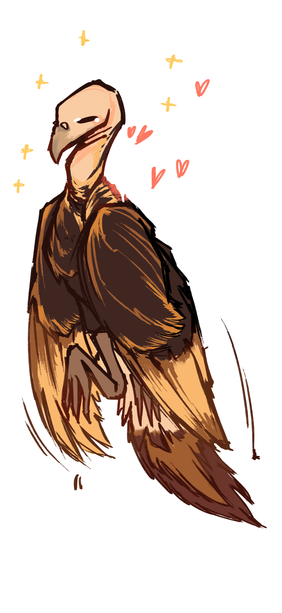

Warm Kindness: to walk alongside someone else, with gentle care and reassurance. to care for others deeply, offering your warmth to them despite your exhaustion. to be kind to those around you. those with this character trait also likely go to many amazing concerts~

thank you for your kindness, jian.
i feel so incredibly lucky to have met someone as sweet and kind as you are. i remember when i first met you, i was actually a little intimidated, but for silly reasons really. you were showing us your after effects project, and seeing all of those colors and shapes dance across your screen made me feel awe-struck. it was so beautiful, and in that moment, i wanted to get to know you more.
of course it isn't just your talent in motion graphics that made me feel drawn to you. you are an incredibly considerate and loving person, jian. whenever i talk to you, you always make me feel understood and cared for. your gentleness always sets me at ease, and it's something i cherish deeply about our friendship. thank you for always being so caring! it truly means the world to me.
i wanted to end this by saying that, if you need anything, whether it be a critique on a project you're working on or just someone to talk to, i'll always be here for you. i want to grant you the same kindness that you've given me. it's the least i can do, and, that's what friendships are for afterall~
thank you jian! have a wonderful break, and remember to take care of yourself! happy thanksgiving!
love, stephen